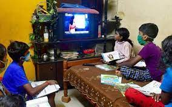

These media also became very crucial that any false news they publish will create a big issue. Each and every news they say should be very careful, there was much fake news propagating among people. These television media helped people to get educated about COVID-related things. They showed the importance of personal hygiene, use of sanitizers, washing hands with soaps, and mainly the use of masks. The news channels began covering the shortage of masks and sanitizers, which helped people to purchase them before they are depleted, and also created panic among people. When our country announced a complete lockdown, daily wages worker's life became very harsh. They are hardly able to find a way to earn for their family. Some media channels point to this issue, which helped them in many ways. There were many migrant workers who travel between states and reach their homes. This has caused the spread of the virus from them to others. But there were some media coverages who show them as a bad face to society and also there were some coverages who showed all the difficulties they faced.
